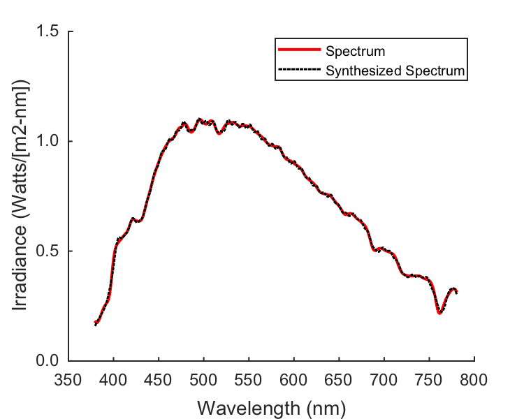
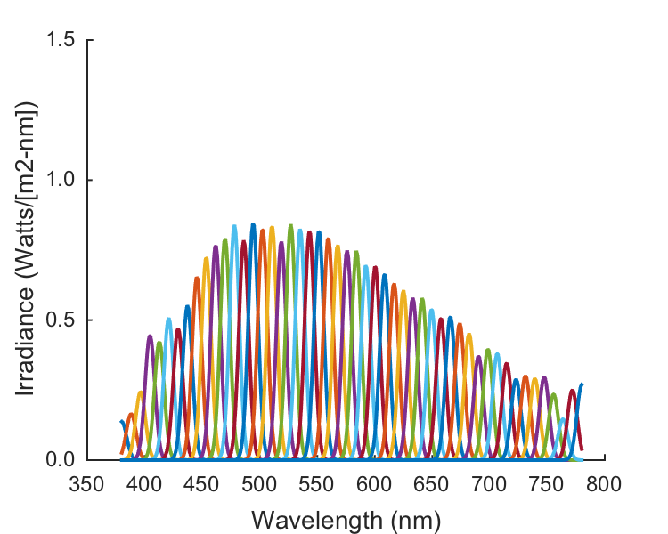

Contents
- Function implementing the isetbio validation code
- Hello
- Load in a spectrum
- Generate a set of narrowband lights with specified FWHM and a Gaussian shape.
- Analyze the broadband spectrum as a weighted sum of the narrowband basis spectra
- Make a figure of the spectrum and its fit for the box
- Figure of the scaled narrowband lights
- Save validation data
function varargout = cbOpticsImage_WavelengthComponents(varargin) % % Show an illustrative spectrum and decompose it. % % This illustrates how we can analyze and synthesize lights as superpositions of % other lights. % % (c) David Brainard and Andrew Stockman, 2015 varargout = UnitTest.runValidationRun(@ValidationFunction, nargout, varargin); end
Function implementing the isetbio validation code
function ValidationFunction(runTimeParams)
Hello
UnitTest.validationRecord('SIMPLE_MESSAGE', sprintf('%s',mfilename)); outputDir = sprintf('%s_Output',mfilename); if (~exist(outputDir,'dir')) mkdir(outputDir); end
Load in a spectrum
This is sunlight measured off a white paper in DHB's office. Input units are radiance, Watts/[m2-sr-wlband]. Wavelength sampling follows PTB conventions and is given in the vector S, which has [start delta nsamples] in nm.
After loading, convert units to power per nm, by converting to 1 nm spaceing.
S = [380 1 401]; load spd_phillybright data.theSpdRadiance = SplineSpd(S_phillybright,spd_phillybright,S); data.theWls = SToWls(S); % Convert radiance to the incident irradiance, assuming that the white % paper was a perfectly reflecting diffuser. (Not exactly correct, but % close enough for illustrative purposes.) % % The radiance gives the amount of light coming out through a sr per m2 of % the paper. For a perfect diffuser, this value is the same in all % directions, and the total light coming out per m2 is the same as the light arriving % per m2. A sphere has 4*pi steradians, but all the light is coming out over a hemisphere. % So the irradiance is 2*pi times the radiance for this special case. data.theSpdIrradiance = 2*pi*data.theSpdRadiance;
Generate a set of narrowband lights with specified FWHM and a Gaussian shape.
There is nothing magic about the Gaussian, but it is a convenient approximation to the kinds of narrowband lights one can get with filters.
You can explore the effect of varying the FWHM of the narrowband components and the number of components used in the analysis/synthesis by changing these parameters below.
data.FWHM = 10; data.nNarrowband = 50; data.centerWls = linspace(data.theWls(1),data.theWls(end),data.nNarrowband); data.gaussSd = FWHMToStd(10); data.B = MakeGaussBasis(data.theWls,data.centerWls,data.gaussSd^2);
Analyze the broadband spectrum as a weighted sum of the narrowband basis spectra
and then syntehsize it.
data.weights = data.B\data.theSpdIrradiance; data.theSpdSynthesized = data.B*data.weights; % Also construct the scaled basis spectra for plotting. These add without % additional weights to data.scaledB = data.B*diag(data.weights); checkSpd = sum(data.scaledB,2); UnitTest.assertIsZero(checkSpd-data.theSpdSynthesized,'Compare of two ways of synthesizing',0);
Make a figure of the spectrum and its fit for the box
if (runTimeParams.generatePlots) [spectralFig,figParams] = cbFigInit; figParams.xLimLow = 350; figParams.xLimHigh = 800; figParams.xTicks = [350 400 450 500 550 600 650 700 750 800]; figParams.xTickLabels = {'^{ }350_{ }' '^{ }400_{ }' '^{ }450_{ }' '^{ }500_{ }' ... '^{ }550_{ }' '^{ }600_{ }' '^{ }650_{ }' '^{ }700_{ }' '^{ }750_{ }' '^{ }800_{ }'}; figParams.yLimLow = 0; figParams.yLimHigh = 1.5; figParams.yTicks = [0 0.5 1 1.5]; figParams.yTickLabels = {' 0.0 ' ' 0.5 ' ' 1.0 ' ' 1.5 '}; plot(data.theWls,data.theSpdIrradiance,'r','LineWidth',figParams.lineWidth); plot(data.theWls,data.theSpdSynthesized,'k:','LineWidth',figParams.lineWidth-1); xlabel('Wavelength (nm)','FontSize',figParams.labelFontSize); ylabel('Irradiance (Watts/[m2-nm])','FontSize',figParams.labelFontSize); cbFigAxisSet(spectralFig,figParams); [~,legendChildObjs] = legend({['^{ }' figParams.legendExtraSpaceStr ' Spectrum '],[ '^{ }' figParams.legendExtraSpaceStr ' Synthesized Spectrum']}, ... 'Location','NorthEast','FontSize',figParams.legendFontSize); lineObjs = findobj(legendChildObjs, 'Type', 'line'); xCoords = get(lineObjs, 'XData') ; for lineIdx = 1:length(xCoords) if (length(xCoords{lineIdx}) ~= 2), continue; end set(lineObjs(lineIdx), 'XData', xCoords{lineIdx} + [0 figParams.legendLineTweak]) end FigureSave(fullfile(outputDir,[mfilename '_Spectrum']),spectralFig,figParams.figType); end
Figure of the scaled narrowband lights
if (runTimeParams.generatePlots) [narrowbandFig,figParams] = cbFigInit; figParams.xLimLow = 350; figParams.xLimHigh = 800; figParams.xTicks = [350 400 450 500 550 600 650 700 750 800]; figParams.xTickLabels = {'^{ }350_{ }' '^{ }400_{ }' '^{ }450_{ }' '^{ }500_{ }' ... '^{ }550_{ }' '^{ }600_{ }' '^{ }650_{ }' '^{ }700_{ }' '^{ }750_{ }' '^{ }800_{ }'}; figParams.yLimLow = 0; figParams.yLimHigh = 1.5; figParams.yTicks = [0 0.5 1 1.5]; figParams.yTickLabels = {' 0.0 ' ' 0.5 ' ' 1.0 ' ' 1.5 '}; plot(data.theWls,data.scaledB,'LineWidth',figParams.lineWidth); xlabel('Wavelength (nm)','FontSize',figParams.labelFontSize); ylabel('Irradiance (Watts/[m2-nm])','FontSize',figParams.labelFontSize); cbFigAxisSet(spectralFig,figParams); %legend({'Linear', 'Model Eye Based'},'Location','NorthWest','FontSize',figParams.legendFontSize); FigureSave(fullfile(outputDir,[mfilename '_NarrowbandSpectra']),spectralFig,figParams.figType); end
Save validation data
UnitTest.validationData('validateDataStruct', data);
end